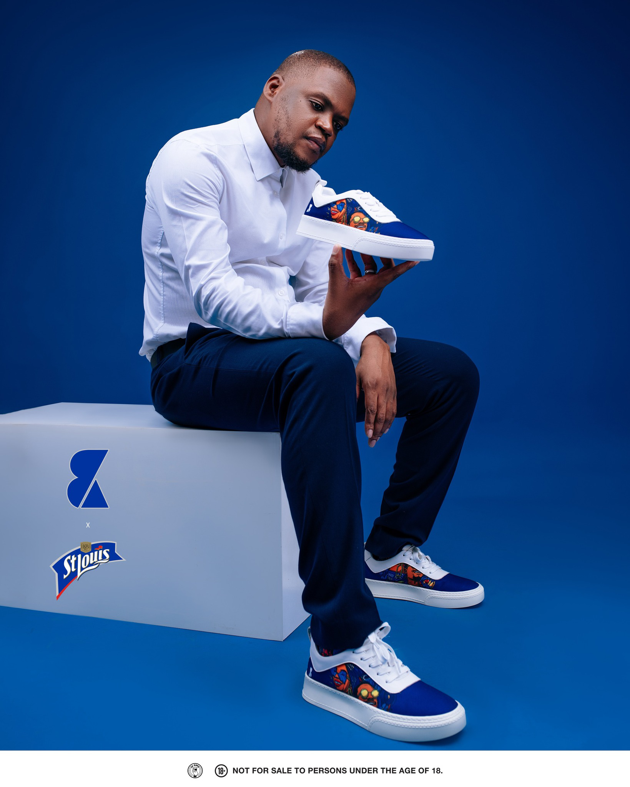

Collections by BK Proctor x St Louis Lager – HYPE THE HOMEGROWN
A fusion of fashion, creativity and community - Collections by BK Proctor proudly joined forces with St Louis Lager to bring you the official merchandise of the HYPE THE HOMEGROWN campaign. This collaboration is a testament to the power of local talent, innovation and cultural pride, seamlessly blending fashion with the spirit of Botswana’s most celebrated lager.
THE EXCLUSIVE COLLECTION

APPAREL: A curated selection of T-shirts, windbreakers, caps, bucket hats and socks—each featuring campaign-inspired graphics designed by Fifi Wale and infused with the signature quality of Collections by BK Proctor.
HYPE THE HOMEGROWN is more than just a campaign; it’s a call to celebrate and uplift Botswana’s creative scene. Whether you’re rocking the latest Collections by BK Proctor designs or sipping a crisp St. Louis Lager, you’re making a statement that local talent deserves to be seen, supported and celebrated.
Shop the exclusive merchandise at all Collections by BK Proctor stores countrywide and be part of a cultural revolution that champions fashion, music and brewing excellence.